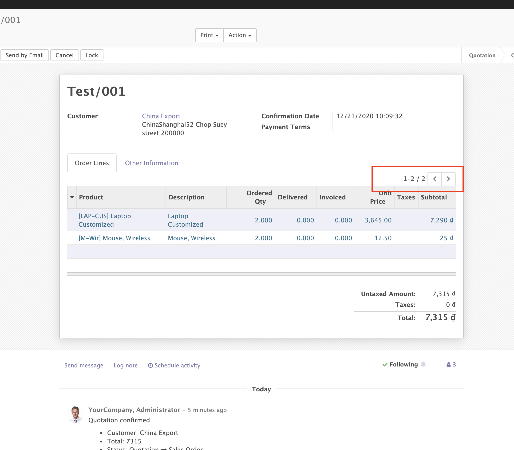

Default number of rows in one2many
Show number of row in One2many tree view even its less than 40 records
Original Odoo only show number of row when its more than 40 records and has pagination, its hard for user to know how many row they have. So, we show the number of rows as default allow user can track their row number easily
